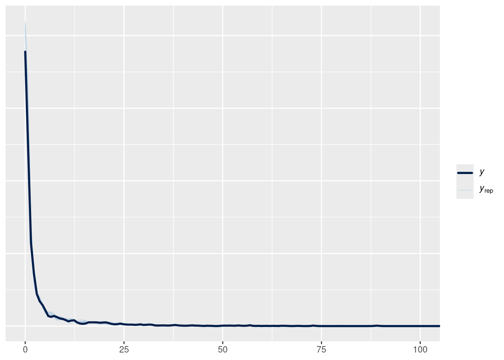

Its very useful to have an idea of where the variation is in a dataset, as a guide to model building and future data collection. Before collecting information on independent variables that you think might explain variation – first find out how much variation there is!
Random intercepts give us a very handy way to investigate this: the so-called “intercept only” model. At this point in the course we now have all the tools needed to build it. There are two steps: first we build a model with no predictors at all, only a random intercept for every grouping variable in the data (e.g. species, sites, years, regions). Then we examine the relative magnitudes of the standard deviations to see which is relatively larger or smaller.
Abundance of mites in different samples
We’re going to build this by extending the observation level random effect model from the previous section. Remember that observation-level random effects are mostly useful for Poisson distributions! If you want to extend this model to other kinds of data, remember to remove that part of it.
Loading 'brms' package (version 2.23.0). Useful instructions
can be found by typing help('brms'). A more detailed introduction
to the package is available through vignette('brms_overview').
Attaching package: 'brms'
The following objects are masked from 'package:tidybayes':
dstudent_t, pstudent_t, qstudent_t, rstudent_t
The following object is masked from 'package:stats':
ar
create a Poisson model of species abundance that offers three random intercepts: one for species, one for site, and another for observation level. TIP: the dataset has no factor for observation-level variance, you will have to create one.
What’s the average abundance of each species? To answer this question, we can extract only the random effects of species, and create a kind of rank-abundance plot. Note that we don’t need to transform the response, because tidybayes::add_epred_rvars applies the link function for us:
Using 10 posterior draws for ppc type 'dens_overlay' by default.
Coordinate system already present.
ℹ Adding new coordinate system, which will replace the existing one.

Source Code
---title: Fitting an intercept-only modeldescription: | Where is the variation?execute: freeze: trueformat: html: code-tools: trueeditor_options: chunk_output_type: console---## Variance partitioning with hierarchical modelsIts very useful to have an idea of where the variation is in a dataset, as a guide to model building and future data collection. Before collecting information on independent variables that you think might explain variation -- first find out how much variation there is! Random intercepts give us a very handy way to investigate this: the so-called "intercept only" model. At this point in the course we now have all the tools needed to build it. There are two steps: first we build a model with no predictors at all, only a random intercept for every grouping variable in the data (e.g. species, sites, years, regions). Then we examine the relative magnitudes of the standard deviations to see which is relatively larger or smaller.## Abundance of mites in different samplesWe're going to build this by extending the observation level random effect model from the previous section. Remember that observation-level random effects are mostly useful for Poisson distributions! If you want to extend this model to other kinds of data, remember to remove that part of it.### Mathematical model$$\begin{align}\text{Abundance}_i &\sim \text{Poisson}(\lambda_i) \\\log{\lambda_i} &\sim \mu + \beta_{\text{sample}[i]} + \beta_{\text{species[i]}} + \beta_i\\\mu &\sim \text{Normal}(3, 1)\\\beta_{\text{sample}} &\sim \text{Normal}(0, \sigma_{\text{samp}})\\\beta_{\text{species}} &\sim \text{Normal}(0, \sigma_{\text{species}})\\\beta_i &\sim \text{Normal}(0, \sigma_{\text{obs}}) \\\sigma_{\text{samp}} &\sim \text{Exponential}(3)\\\sigma_{\text{species}} &\sim \text{Exponential}(3)\\\sigma_{\text{obs}} &\sim \text{Exponential}(3)\end{align}$$### Load packages and prepare data```{r}suppressPackageStartupMessages(library(dplyr))library(ggplot2)library(tidyr)library(tidybayes)library(brms)data("mite", package ="vegan")``````{r}spp_names <-colnames(mite)spp_names <-setNames(1:ncol(mite), colnames(mite))mite_long <- mite |>mutate(site_id =seq_len(nrow(mite))) |> tidyr::pivot_longer(-site_id,names_to ="spp",values_to ="abd") |> dplyr::mutate(spp_id = spp_names[spp])knitr::kable(head(mite_long))```## EXERCISE create a Poisson model of species abundance that offers *three* random intercepts: one for species, one for site, and another for observation level. TIP: the dataset has no factor for observation-level variance, you will have to create one.```{r}## datamite_long_siteid <- mite_long |>mutate(obs_id =seq_along(spp))# formulamite_intercept_only_bf <-bf(abd ~1+ (1| spp_id) + (1| site_id) + (1| obs_id), family =poisson(link ="log"))get_prior(mite_intercept_only_bf, data = mite_long_siteid)mite_intercept_only_prior <-c(prior(normal(3, 1), class ="Intercept"),prior(exponential(3), class ="sd"))mite_intercept_only_brm <-brm( mite_intercept_only_bf,data = mite_long_siteid,prior = mite_intercept_only_prior,sample_prior ="yes",file = here::here("topics/intercept_only/mite_intercept_only_brm.rds"),cores =4)```To examine the relative magnitudes of the standard deviations```{r}head(tidybayes::get_variables(mite_intercept_only_brm))bayesplot::mcmc_areas(mite_intercept_only_brm, regex_pars ="sd_.*")```What's the average abundance of each species? To answer this question, we can extract _only_ the random effects of species, and create a kind of rank-abundance plot. Note that we don't need to transform the response, because `tidybayes::add_epred_rvars` applies the link function for us:```{r}mite_long_siteid |>select(spp, spp_id) |>distinct() |> tidybayes::add_epred_rvars( mite_intercept_only_brm, re_formula =~ (1| spp_id) ) |>mutate(avg_abd=.epred,spp = forcats::fct_reorder(.f = spp, .x = .epred)) |>ggplot(aes(y = spp, xdist = .epred)) +stat_dist_pointinterval()```Posterior predictions look alright also:```{r}pp_check(mite_intercept_only_brm) +coord_cartesian(xlim =c(0,100))```<!-- :::{.callout-warning} --><!-- ## Warning: irresponsible statistics --><!-- I'm sampling only 2 chains below, for illustration purposes only! use more chains in your research. --><!-- ::: -->